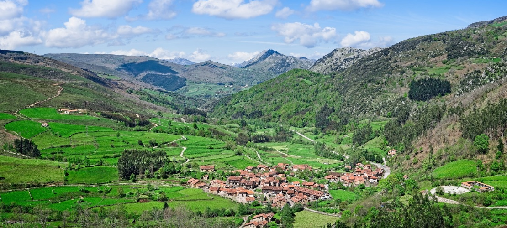

Cantabria
VIDEOS
Cantabria es una región de España conocida por su espectacular paisaje natural y su rica oferta cultural. Desde sus impresionantes costas en el mar Cantábrico y las playas de arena dorada, hasta sus montañas y valles verdes, Cantabria ofrece una experiencia única para cada visitante. La región destaca por su deliciosa gastronomía, incluyendo platos como el cocido montañés, las anchoas de Santoña y los sobaos pasiegos.
Las ciudades y pueblos de Cantabria, como Santander, Santillana del Mar y Comillas, reflejan su historia y tradiciones, con monumentos históricos, museos y una vibrante vida cultural. La vida cultural cántabra es rica y diversa, con eventos como las fiestas de Santiago en Santander y el Festival Internacional de Santander, que atraen a visitantes de todo el mundo.
Además, Cantabria ofrece numerosas oportunidades para actividades al aire libre, como el senderismo en los Picos de Europa, el surf en sus playas y la exploración de sus cuevas prehistóricas como la cueva de Altamira. Ya sea en sus ciudades costeras o en sus impresionantes paisajes naturales, Cantabria ofrece experiencias inolvidables para todo tipo de viajeros.